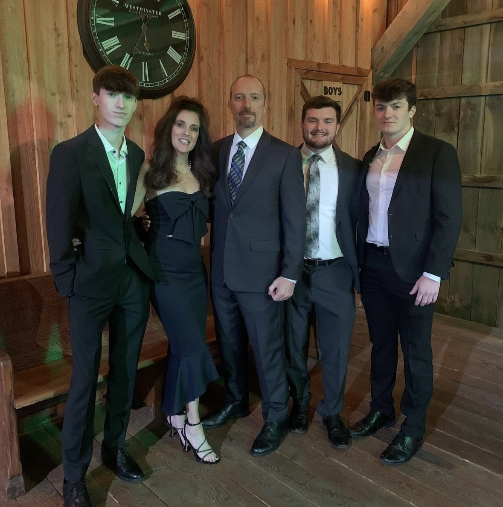
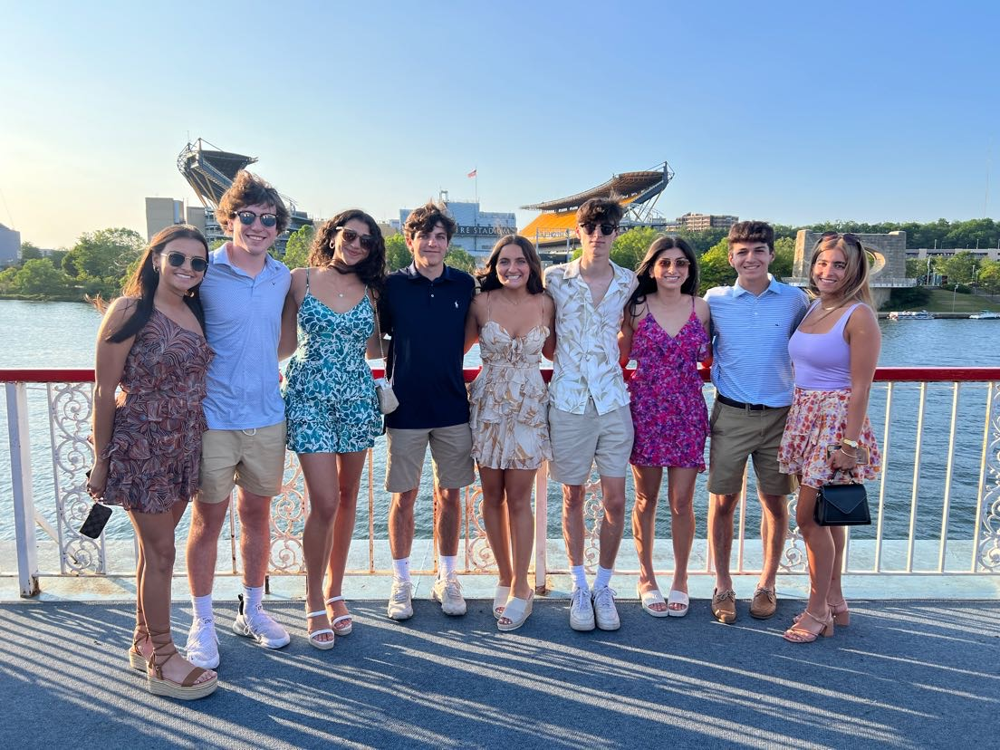
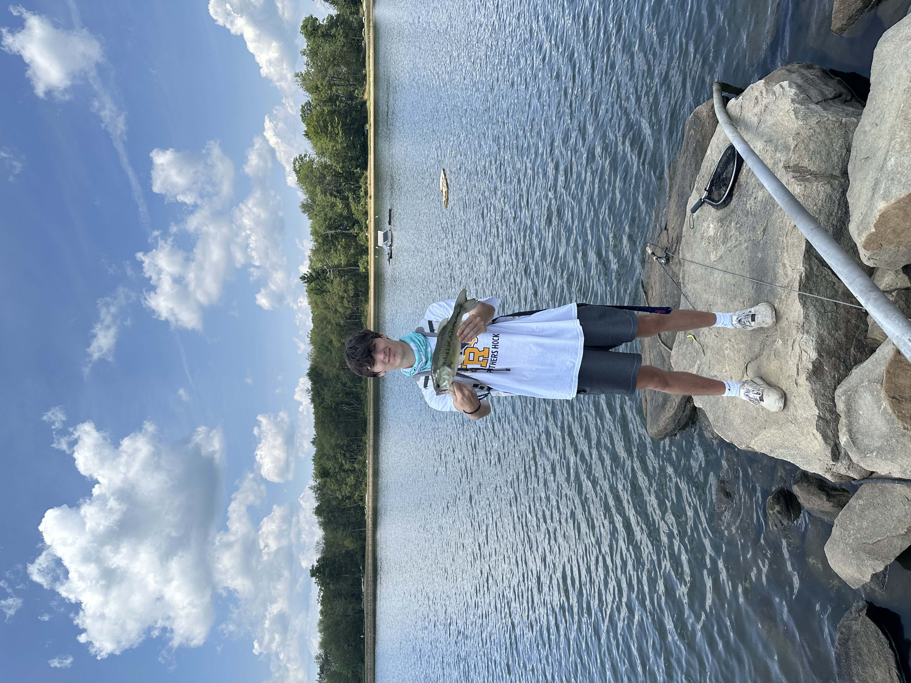
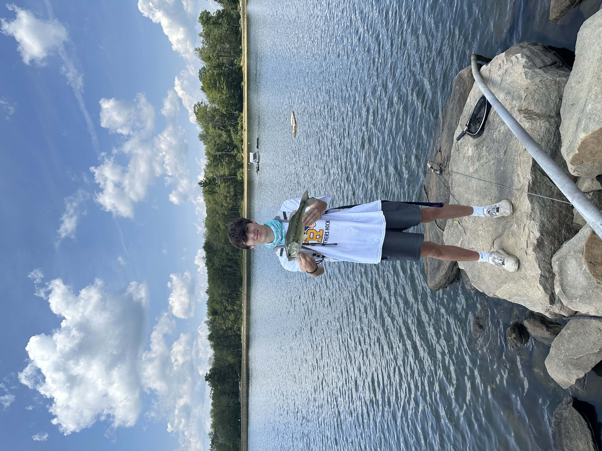
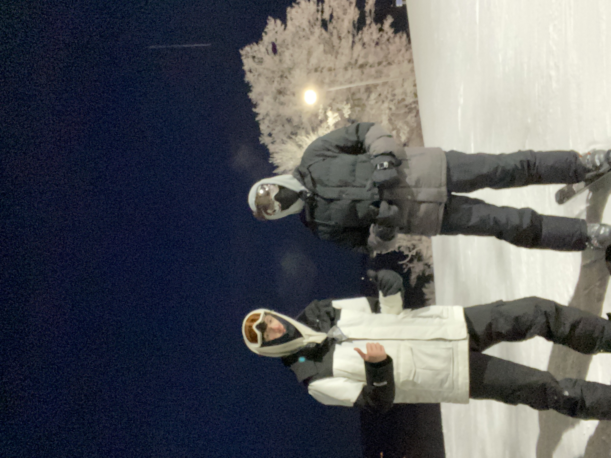
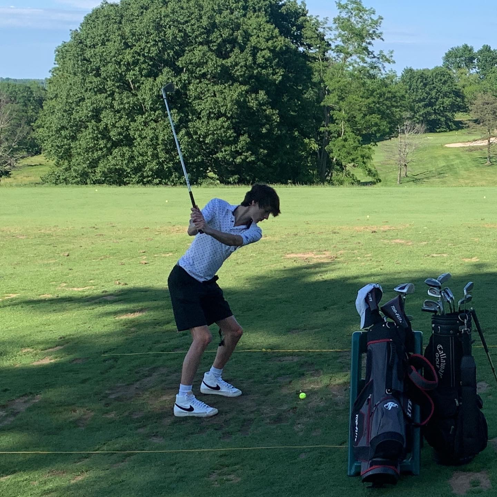
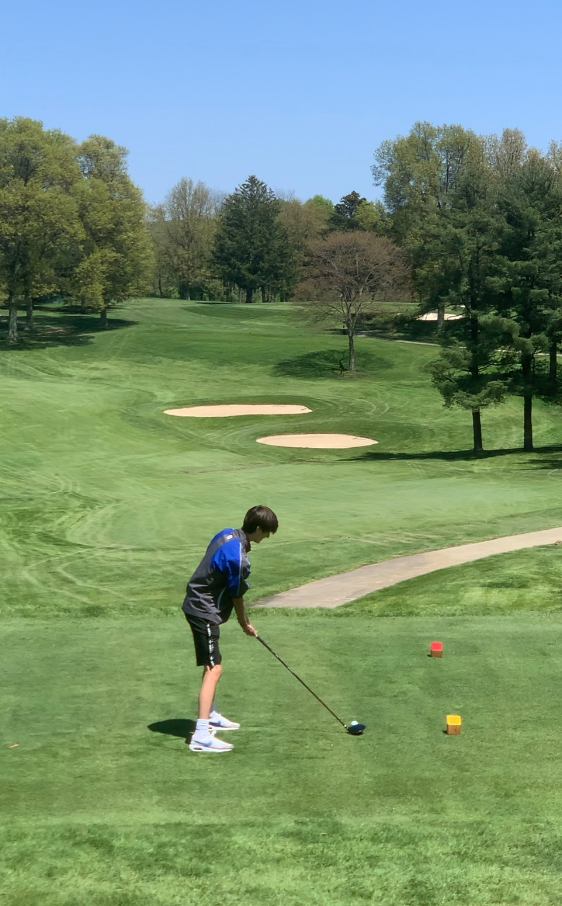

Hobbies
Spending Time With Family/Friends
 
I love spending time with my friends and family, and having fun together is a big part of my life. I believe that staying close with loved ones is incredibly important, and I cherish all the good memories we've created, even during tough times. The bonds we share and the joy we bring each other make those moments unforgettable and valuable.
Coding

I've always been fascinated by computers and how they work. From a young age, I've been drawn to problem-solving, and coding has been the perfect outlet for this passion. It's a hobby that not only satisfies my curiosity about technology but also allows me to tackle complex challenges and create innovative solutions. For me, coding is more than just a skill; it's a fulfilling way to channel my problem-solving abilities and continue exploring the endless possibilities of the digital world.
Fishing
 

As a kid, I’ve always had a passion for fishing, and that love has stayed with me into adulthood. Fishing has always been a fun and relaxing hobby for me, offering a perfect escape and a way to clear my mind. Whether it’s the quietude of the early morning or the thrill of a catch, it’s a timeless activity that brings me joy and peace.
Snowboarding
I've always loved snowboarding; there's something exhilarating about gliding through the snow down a beautiful mountain that really gets to me. The thrill of carving through fresh powder and the breathtaking scenery combine to make snowboarding an incredible experience. It’s a perfect blend of adventure and tranquility that I can’t get enough of.
Golfing
 I’ve always had a love for golf, even though I was never the best at it. What made it special was the fun I had playing with my family and friends. It’s a great way to spend time together, share laughs, and enjoy the game, regardless of skill level. The joy of those moments on the course always stands out to me.